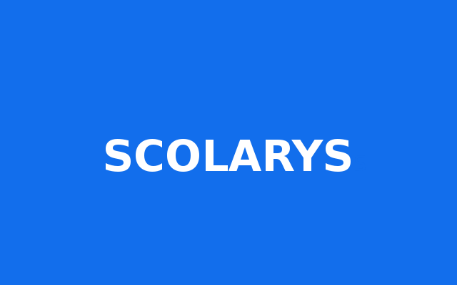

<ion-menu [content]="content">

    <ion-header>

        <ion-toolbar>

            <!--  -->
            

        </ion-toolbar>

    </ion-header>

    <ion-content>

        <ion-list>

            <button menuClose ion-item *ngFor="let p of pages" (click)="openPage(p)">

                <ion-icon name="{{p.icon}}" item-left  color="{{p.color}}"  ></ion-icon>

                {{p.title}}
       </button>

        </ion-list>

        <ion-item-group>

            <ion-item-divider color="light">Quittez </ion-item-divider>

            <ion-item>
            <button ion-button icon-only (click)="IsLogged()" clear >
                <ion-icon name="power" item-left class="power custom-menu"></ion-icon> Se deconnecter
            </button>
            </ion-item>

        </ion-item-group>


    </ion-content>

</ion-menu>
<!-- Disable swipe-to-go-back because it 's poor UX to combine STGB with side menus -->
<ion-nav [root]="rootPage" #content swipeBackEnabled="false"></ion-nav>
